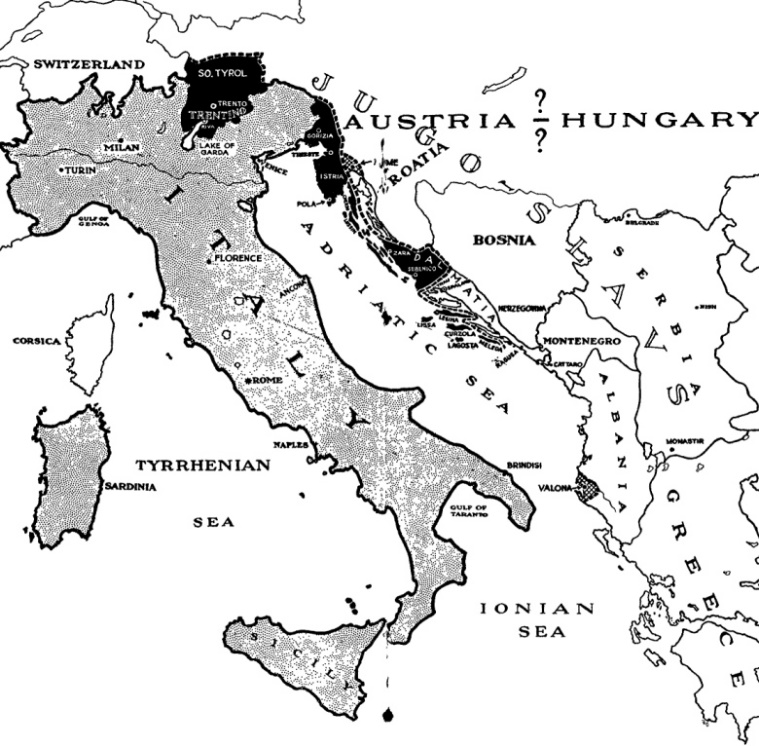
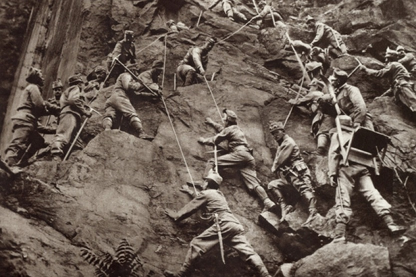

 Italy was initially part of the Triple Alliance between Germany and Austria-Hungary, but when war broke out it remained neutral. Italy claimed its alliance was a defensive one and would only defend its allies if they were invaded, which in WWI Germany and Austria-Hungary the nations were invading. Italy at the time of World War 1, and were initially going to stay neutral. The Triple Entente instead approached Italy with a deal that would enable to go to war with its old allies. The deal offered off Austro-Hungarian land to Italy, Montenegro, and Serbia, but also aided the financial woes of Italy. Italy agreed and would start their military campaigns against their allies in the spring of 1915. The Italian front would become similar to western front, but their trenches would be in mountainous border between Italy and Austria-Hungary. The Battle of Isonzo would include five Italian pushes with an Italian defeat, but both sides lost many soldiers.
The Triple Entente was between Russia, Britain and France, which was formed in 1907 to counteract the Triple Alliance of Germany, Austro-Hungary and Italy. So when war was to break out, all nations would declare war on one another besides Italy, who believed the Triple Alliance was for defensive wars not offensive wars, Italy later on would join the Entente. The United State of America stood back in the early part of this war due to a longstanding isolationistic view on Europe known as the Monroe Doctrine but due to German U-boats that would change as the war went on and the USA would start supporting the Entente.